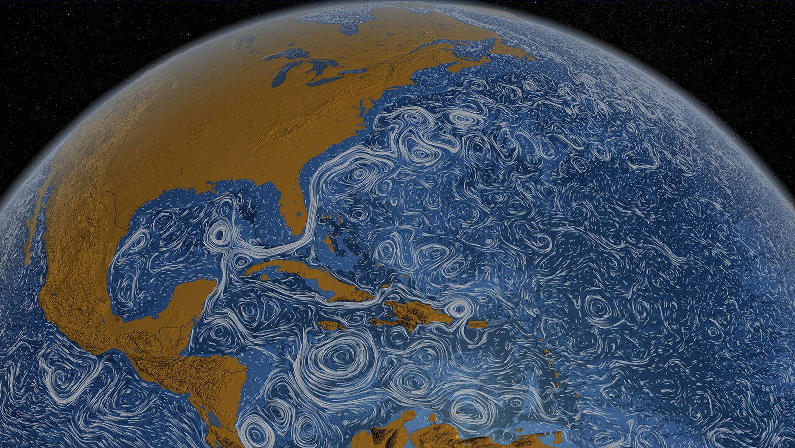

class: center, middle <br/><br/> .title[Dinámica de Fluidos Geofísicos] .subtitle[Aceleración de Coriolis] <br/><br/> .author[Semestre 2024-I] .institution[Facultad de Ciencias] <br/> .date[29 y 31 de agosto de 2023] <br/><br/> <img style="width:100%" src="./figures/green_waves.png"> <!-- .note[Created with [{Liminal}](https://github.com/jonathanlilly/liminal) using [{Remark.js}](http://remarkjs.com/) + [{Markdown}](https://github.com/adam-p/markdown-here/wiki/Markdown-Cheatsheet) + [{KaTeX}](https://katex.org)] --> --- name: toc class: left <img style="width:40%" src="./figures/ink.jpg"> #Contenido 1. [Sistema de referencia inercial y no inercial](#sr) 1. [Sistema de referencia en rotación](#rotacion) 1. [Implicaciones de la fuerza centrífuga](#centrifuga) 1. [Repaso clase pasada](#repaso) 1. [Movimiento de una partícula en un plano en rotación](#plano) 1. [Aceleración en un planeta 3D](#3D) <!-- Comment out the next slide if you don't want the Table of Contents link --> --- layout: true .toc[[✧](#toc)] --- name: sr class: left # Sistemas de referencia * Movimiento de los cuerpos se describe en relación a la posición de otros cuerpos, observadorxs, coordenadas, etc. Estos últimos se conocen como sistemas de referencia. * Elegir las coordenadas adecuadas puede simplificar las ecuaciones de movimiento, y al revés: elegir unas coordenadas "malas" puede complicar las ecuaciones innecesariamente. **Inercial**: Se mueve a velocidad constante. Ej. Fijo respecto a las estrellas lejanas, un tren en un tramo recto, etc. **No inercial**: Acelerado respecto a un sistema inercial Ej. En rotación, caída libre, etc. --- class:left ## ¿Qué sistema elegir para describir a los fluidos geofísicos? - Vivimos en un sistema no inercial (SRNI) y desde aquí observamos a los fluidos geofísicos terrestres. - Las montañas y costas están fijas respecto a la Tierra. - Es más sencillo lidiar conlos términos extra en las ecuaciones debido a la rotación del SRNI que con las fronteras móviles y tener que restar sistemáticamente la rotación ambiente. <img style="width:48%" src="./figures/coriolis_platform.jpg">  --- name: rotacion class:left ## Caso 2D: equivalencia de la descripción en el SRI y el SRNI Vamos al pizarrón... --- name: centrifuga class: left ## La aceleración centrífuga En la sección anterior obtuvimos que: *La aceleración de Coriolis es $\propto \mathbf{u}, \mathbf{\Omega}$; * la aceleración centrífuga ($A_c\propto r, {\Omega}^2$), donde $r$ es la distancia al eje de rotación. $A_c$ es perpendicular al eje de rotación y apunta hacia afuera, pero los objetos quietos en la superficie terrestre no salen volando, ¿por qué? --- class: left Sin rotación, las fuerzas gravitacionales mantienen todo junto para formar un curepo esférico. Con rotación, la fuerza centrífuga distorsiona ligeramente el equilibrio esférico <img style="width:90%" src="./figures/elipsoide.jpg"> --- class: Vamos al pizarrón... --- class: left ## En verdad, la tierra es un geoide <img style="width:90%" src="./figures/Geoid.jpg"> --- name: repaso class: left # La clase pasada aprendimos: * La diferencia entre sistemas de referencia inerciales y no inerciales; * a escribir vectores absolutos en el sistema de referencia en rotación (posición, velocidad y aceleración); * que la aceleración absoluta en el sistema en rotación tiene 3 términos: ac. relativa, ac. de Coriolis y ac. centrífuga; * que la ac. centrífuga es proporcional a $\Omega^2$ y a la distancia al eje de rotación; * que la ac. de Coriolis es porporcional a la velocidad (relativa) y a $\Omega$. --- class: left **1. Cuál es la magnitud de la aceleración centrífuga y de Coriolis que experimentas mientras tomas un baño de sol en la azotea de una casa en el Ecuador (Lat $\theta=0$, asumiendo una Tierra esférica de radio $R_T$ con taza de rotación $\Omega$)?** a) centrífuga = $\Omega^2 R_T$, Coriolis > $0$. b) centrífuga = $\Omega^2 R_T$, Coriolis = $0$. c) centrífuga = $\Omega^2 R_T \cos{\theta}$, Coriolis > $0$. d) centrífuga = $\Omega^2 R_T \cos{\theta}$, Coriolis = $0$. e) b y d -- **Respuesta: e** --- class: left **2. Cuál es la magnitud de la aceleración centrífuga y de Coriolis que experimentas mientras tomas un baño de sol en Veracruz (Lat $\theta_V$, asumiendo una Tierra esférica de radio $R_T$ con taza de rotación $\Omega$)?** a) centrífuga = $\Omega^2 R_T$, Coriolis > $0$. b) centrífuga = $\Omega^2 R_T$, Coriolis = $0$. c) centrífuga = $\Omega^2 R_T \cos{\theta_V}$, Coriolis > $0$. d) centrífuga = $\Omega^2 R_T \cos{\theta_V}$, Coriolis = $0$. e) b y d -- **Respuesta: d** --- class: left **3. Cuál es la magnitud de la aceleración centrífuga y de Coriolis que experimenta una "nube" que viaja a 10 m/s a lo largo del paralelo latitud 49 N (Asumiendo una Tierra esférica de radio $R_T$ con taza de rotación $\Omega$)?** a) centrífuga = $\Omega^2 R_T$, Coriolis > $0$. b) centrífuga = $\Omega^2 R_T$, Coriolis = $0$. c) centrífuga = $\Omega^2 R_T \cos{49}$, Coriolis > $0$. d) centrífuga = $\Omega^2 R_T \cos{49}$, Coriolis = $0$. e) c y d -- **Respuesta: c** --- class: left **4. La vertical local apunta en dirección opuesta a:** a) la gravedad b) la gravedad aparente (resultante, neta) c) la aceleración centrífuga d) todas las anteriores -- **Respuesta: b** --- name: plano class: left # Partícula libre en un plano en rotación * Sin fuerzas externas salvo su peso (Por simplicidad llamaré gravedad a la gravedad aparente) * Caso de un plano (2D) --- class: left ## Veamos un video de este movimiento y discutamos: [UCLA spinlab](https://youtu.be/9QL88dVb-78): El mismo que vimos en clase. --- class: left ## Vamos al pizarrón... y volvamos al video [UCLA spinlab](https://youtu.be/9QL88dVb-78): El mismo que vimos en clase. --- class: left ## En resumen * Una partícula libre en un plano en rotación seguirá un movimiento circular en el sistema en rotación (**oscilación inercial**). * El sentido del movimiento es opuesto al de rotación (horario para $f>0$ y antihorario para $f<0$). * El radio de la circunferencia está dado por $V_0/|f|$, donde $V_0$ es la velocidad inicial y $|f|$ es la magnitud del **parámetro de Coriolis** (f=$2\Omega$). * El periodo que la partícula tarda en competar una vuelta se conoce como **periodo inercial** y está dado por $T_p=2\pi/f= \pi/\Omega$. * En el caso 3D, el movimiento horizontal también es circular (oscilaciones inerciales) pero cambia la definición del parámetro de Coriolis, que ahora depende de la latitud $\varphi$: $f=2\Omega \sin{\varphi}$ --- class: left ## Les dejo los siguientes videos para repasar los conceptos de clases que llevamos hasta ahora: </br></br> [Planenteando](https://youtu.be/7l1xiJICGus): Efecto Coriolis, ahora pueden ponerle matemáticas al video con lo que han aprendido. </br></br> [UCLA spinlab](https://youtu.be/9QL88dVb-78): El mismo que vimos en clase. --- class: left # Referencias .caption[ Cushman-Roisin y Beckers, Introduction to Geophysical Fluid Dynamics, Capítulo 2.] </br></br> .caption[Imágenes tomadas de http://appuntiscienzeodero.blogspot.com/2016/11/la-terra-e-la-luna.html, https://enterprise-insights.dji.com/blog/geoid-vs-ellipsoid]